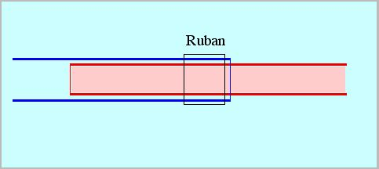
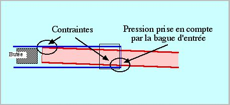
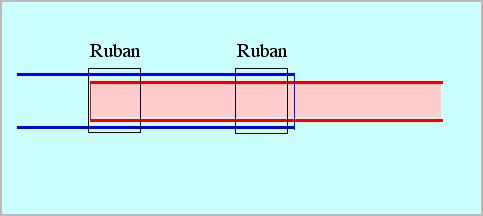
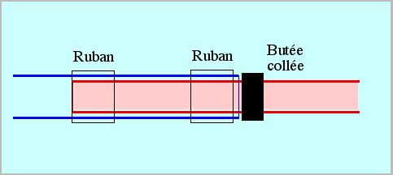

Les emmanchements
La forme la plus naturelle et celle généralement vue est celle-ci :

Pratiquant des emboîtements de tubes carbone sur nombre de mes cerfs-volants, l'expérience m'a inspiré quelques commentaires :
1) La bague
La confection de bagues métal tournées juste au diamètre n'est pas à la portée du premier bricoleur venu, même si vous trouvez du tube alu au bon diamètre (avec quelle précision ?). Et puis c'est long et complexe. De plus, le moindre jeu permettra un micro-éclatement du tube que la bague limitera certes sous elle, mais qui se propagera en amont, là où la bague s'arrête. Pour l'éviter, il faut que la bague comprime bien le tube : précision meilleure que le dixième de mm ?...
D'autre part, cette bague crée une surépaisseur qui peut être gênante pour passer le total dans un ourlet ou un fourreau.
J'ai plus simple : quelques tours (au moins 3) de ruban adhésif ordinaire. Ça ne vous paraît pas solide ? Essayez ! Par exemple, le ruban de fermeture de cartons de déménagements se déchire avec 2 doigts. Mais une fois collé en place, il résiste à des kg de bouquins !
Pour la pose, commencez à en coller 1/2 tour, puis "pré-étirez" le jusqu'à le voir rétrécir un peu, sentir que la résistance augmente nettement et que ça ne s'allonge plus. Continuez alors à enrouler en maintenant la tension. À la fin, relâchez la tension du dernier demi-tour à coller pour que l'extrémité ne "rebique" pas sous la traction à la longue. Juste avant, vous pouvez couper le bout sur lequel vous avez laissé l'empreinte de vos gros doigts graisseux et qui ne colle plus bien. Lissez bien en serrant, et voilà : le ruban cherche à retrouver sa longueur primitive et exerce un serrage dément sur le tube (ne cherchez pas à utiliser du super-ruban armé, épais, qui ne s'allonge pas et dont la colle glisse petit à petit).

Le résultat est, en termes classiques, un "frettage" : les anciens frettaient la bouche des canons avec du simple fil de fer chauffé, c'est vous dire ! Pour les sceptiques, j'utilise du scotch ordinaire (pas Magic) de mon Leclerama, et mes assemblages tiennent jusqu'à rupture du tube intérieur. Le ruban résiste environ 4 ans (en volant beaucoup et selon la pluie subie). La spire externe commence alors à blanchir et à se décoller. Avantage : ça se voit lors du contrôle technique, plus qu'à remplacer, mais ça peut encore tenir un moment...
Si vous tenez vraiment à construire pour les générations futures, vous pouvez utiliser de la ficelle. Il faut serrer très fort : commencez par un noeud coulant ou un noeud de cabestan, faites plusieurs tours en serrant toujours. Passez le dernier bout sous le tour précédent. Ensuite, encollez à la cyano pour ne plus que ça bouge. Faites des noeuds lisses sans petits bouts qui dépassent, sinon, une fois raidis par la colle, ils s'accrochent partout.
2) Deuxième baguage
Le tube emboîté fait levier, et le tube externe n'éclate pas forcément à l'embouchure, mais aussi plus loin, surtout si votre longueur d'emboîtement est un peu courte.

Donc, pour le prix, le surpoids et le sur-travail d'un peu de ruban en plus, faites un deuxième frettage au niveau du fond de l'emboîtement.

3) Butée
La butée interne ne me plaît guère : d'abord, si elle est entrée un peu en force ou se mouille et gonfle, elle participera à l'éclatement ! Ou bien, si le tube interne s'émousse un peu sur cette butée, il aura aussi tendance à faire éclater l'externe.
De plus, coller comment ? À la cyano, c'est vite dit, mais faut aller la mettre là-bas : si on met la colle sur la butée pour la mettre en place ensuite à la bonne profondeur, on a toutes les chances qu'elle se bloque avant ou après le point voulu ! Si on utilise une autre colle plus progressive, il faut être sûr que ce n'est pas une colle souple qui se prêtera à la longue, changeant votre réglage... jusqu'à peut-être lâcher complètement ? Autre inconvénient : vous avez des chances de mettre de la colle tout au long de l'intérieur du tube, et le tube à emboîter ne veut plus rentrer. Comme c'était quasiment fini, on s'énerve et on force, ce qui est évidemment catastrophique ! Il faut gratouiller au fond du trou : l'entrée, ça va, mais faut aller bien jusqu'à la butée, hein ! Et si vous avez essayé d'assembler avant séchage complet, c'est ressortir qui est devenu impossible...
Enfin, pour décaler ou défaire ladite butée (si vous vous êtes trompés, si le tissu s'est détendu, si vous changez d'idée...), bonjour ! Le mieux est de rentrer une tige par l'autre bout et de taper en faisant des prières. Mais mieux vous collerez, plus ce sera dur... et dangereux pour le tube !
Conclusion, je conseille donc plutôt de mettre la butée sur le tube à emboîter. On colle à la cyano une bague, par exemple un bout de durit qui offre l'avantage de répartir son appui grâce à sa souplesse, et c'est fini ! Là, pour la butée, ne surtout pas utiliser d'enroulement de ruban adhésif qui "se prête" progressivement à la poussée latérale et finit par rentrer en partie dans le tube externe avec des conséquences fâcheuses. Pour la même raison, prendre une bague de butée d'un diamètre externe un peu supérieur au gros tube.

Avantage secondaire : vous pouvez mettre la butée en place sans la coller, monter le cerf-volant et régler la butée. Ensuite seulement, plus qu'à la coller sur place. De toute façon, le collage reste accessible et se défait facilement, en détruisant éventuellement la butée, mais pas le tube.
Conclusion
Vous voulez sans doute du "solide" et vous ne me croyez pas avec mon ruban, mais j'ai fait ou constaté toutes les erreurs dont je parle et encore d'autres, alors profitez au mieux des matériaux mais surtout respectez les contraintes :
- les rubans tirés en biais ou entaillés se déchirent. Tirés droit, ils sont très costauds.
- les tubes se fendent ou se cassent à l'endroit de concentration des contraintes.
Donc, construisez sans complexes, mais pas sans réfléchir et sachez profiter de l'expérience.